KOCW 세종대 이원준 교수님 (SIO 02 & OXIDATION 01)
Structure of SiO₂ · Application of SiO₂ · Application 1: Diffusion Masking Layer · Application 2: Device Isolation (LOCOS) · Application 3: Surface Passivation (Pad · Screen · Sacrificial · Barrier Oxide) · Application 4: Device Dielectric (Gate Oxide) · Pre-oxidation RCA Clean · Oxidation Mechanism · Oxide Growth Rate · Process Parameters · Oxidizing Species · Dry vs. Wet · The Deal-Grove Model
1. Structure of SiO₂
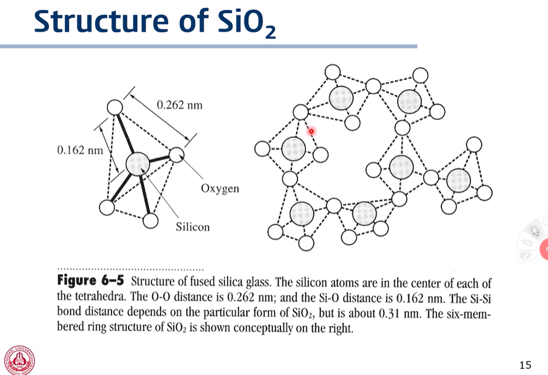
- SiO₂ 이렇게 생겼고, 비정질 구조를 이루고 있다.
- SiO₂ 한 층이 대충 3Å 정도 된다.
2. Application of SiO₂
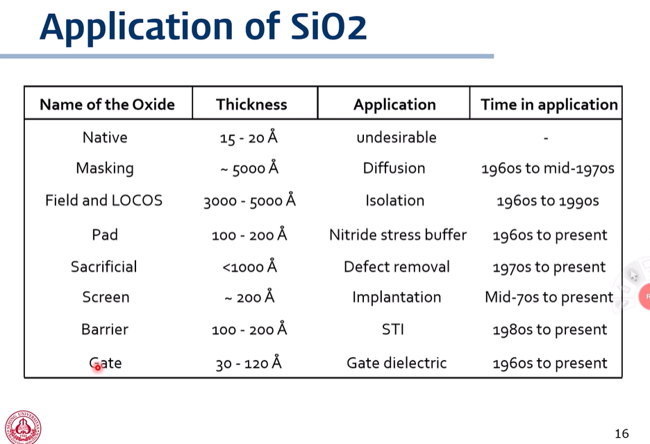
- SiO₂는 이렇듯 목적에 따라서 이름이 다르다.
- 제일 두꺼운 Masking이나 LOCOS 같은 곳에는 더 이상 쓰지 않고 있다.
- Si는 엔탈피가 0이고, SiO₂가 더 에너지가 낮다. 따라서 발열 반응이고, 더 안정해지는 반응이다.
- 자연 산화막은 HF으로 Cleaning 할 수 있다. 그리고 DI water로 세척하고 딱 두면 바로 0.5nm, 1nm 자라고 냅두면 2nm 정도까지는 자란다.
3. Application 1: Diffusion Masking Layer
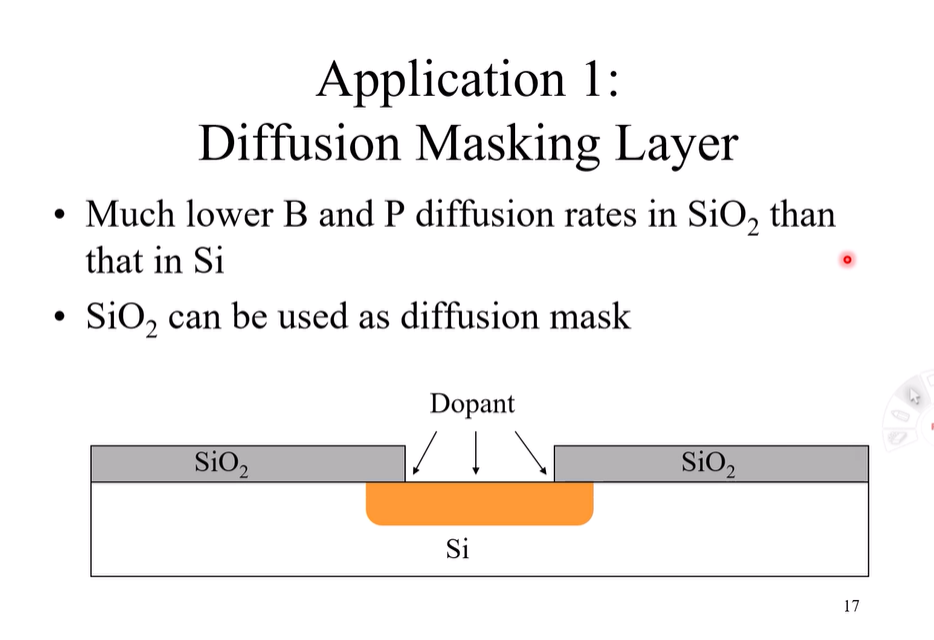
- 이제는 없어졌다. 옛날에는 SiO₂를 Mask로 사용해서 Diffusion을 시켜서 B이나 P 분위기에서 확산을 시켜서 도핑했다.
- 두께는 매우 두꺼웠다. 5000Å 정도 되니까.
4. Application 2: Device Isolation (LOCOS)
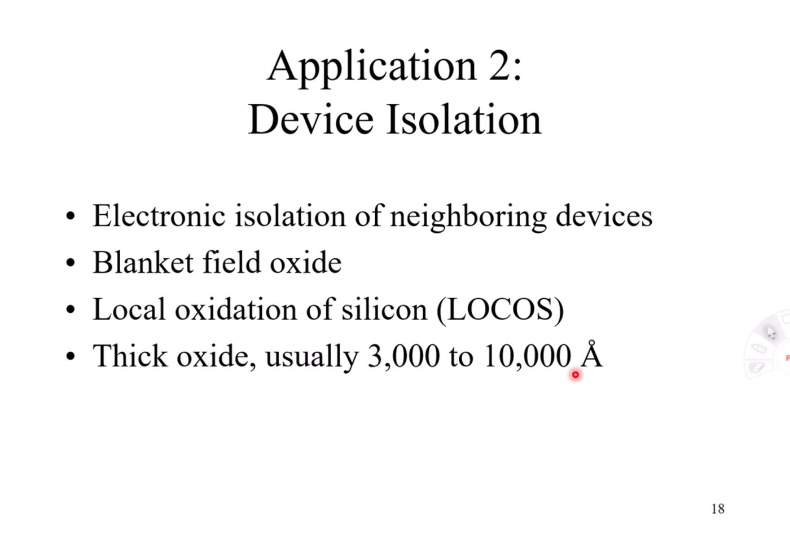
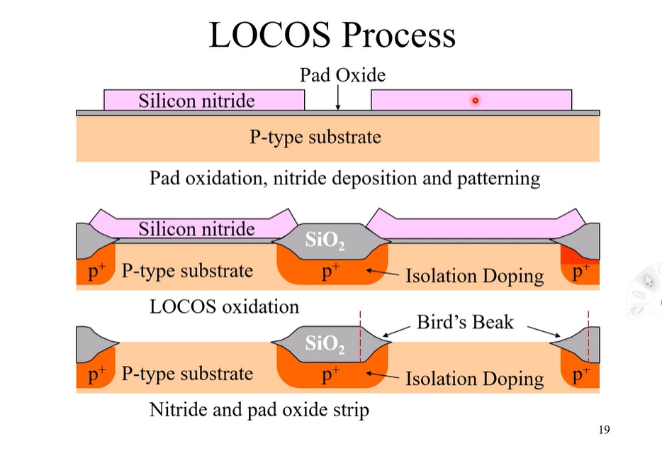
- 여기에서 사용되는 SiO₂는 소자 간의 절연을 시켜주기 위한 목적으로 3000~10000Å으로 두께가 두꺼웠다.
- Si₃N₄를 열어준다음 확산을 통해 SiO₂를 만드는데 Si₃N₄는 훌륭한 확산 방지막으로 사용되고 SiO₂가 성장되는데 이 때 Bird’s Beak가 생기더라.
5. Application 3: Surface Passivation (Pad · Screen · Sacrificial · Barrier Oxide)
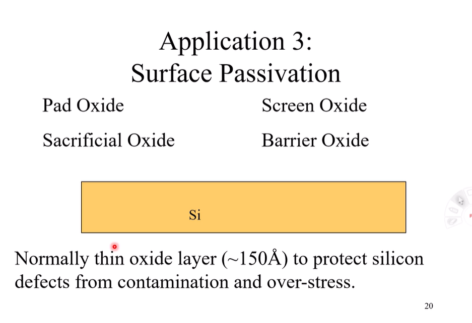
- 표면을 보호해주는 역할로 사용된다. 오염이나 stress로부터 보호해주는 역할.
- 두께는 얇아졌다. 현재도 사용된다.
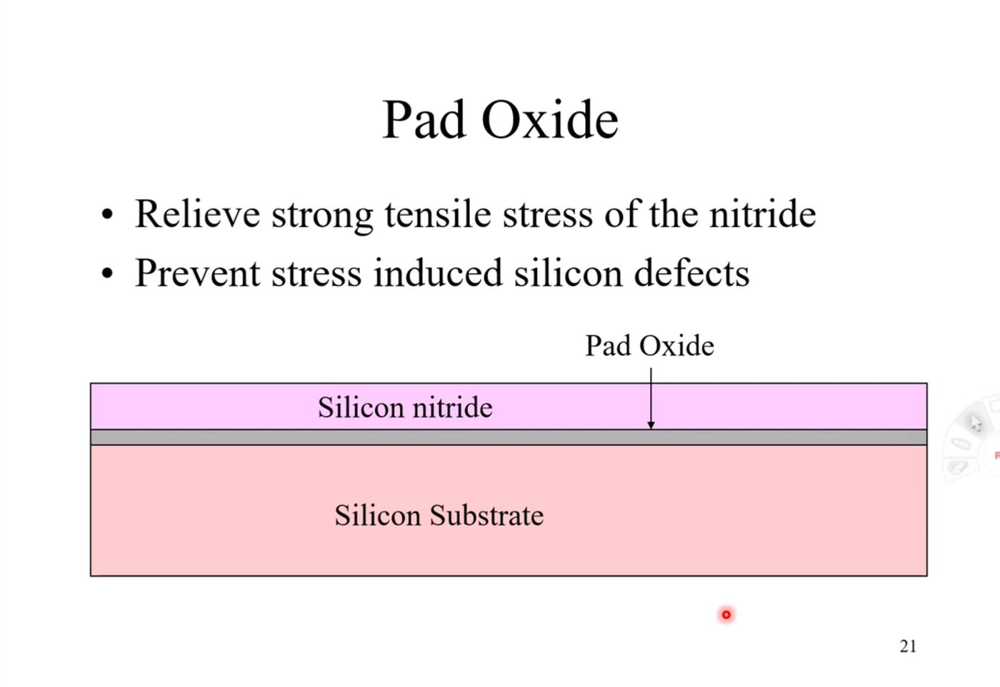
- Pad oxide가 있으면 nitride의 stress를 많이 완화해준다. (오! 이래서 까는거구나)
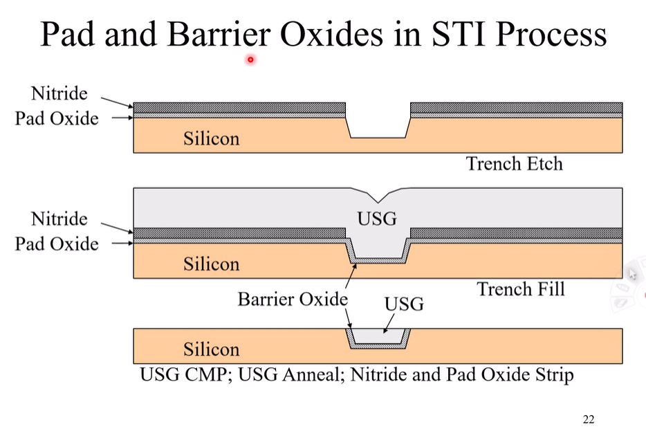
- Si wafer를 Etch를 진행하고나면 defect이 많기 때문에 SiO₂를 통해 defect을 없애준다.
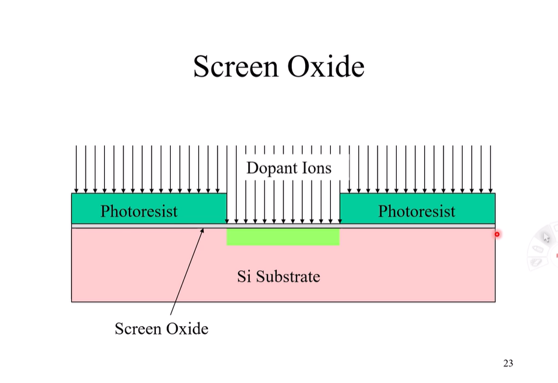
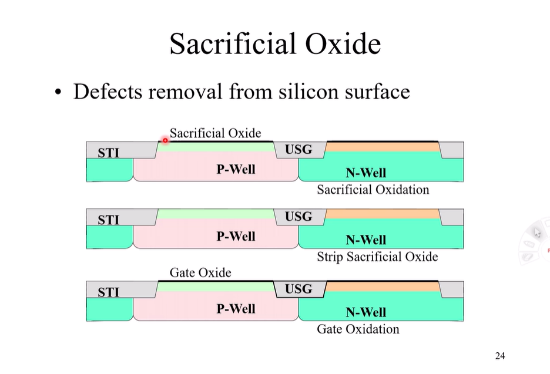
6. Application 4: Device Dielectric (Gate Oxide)
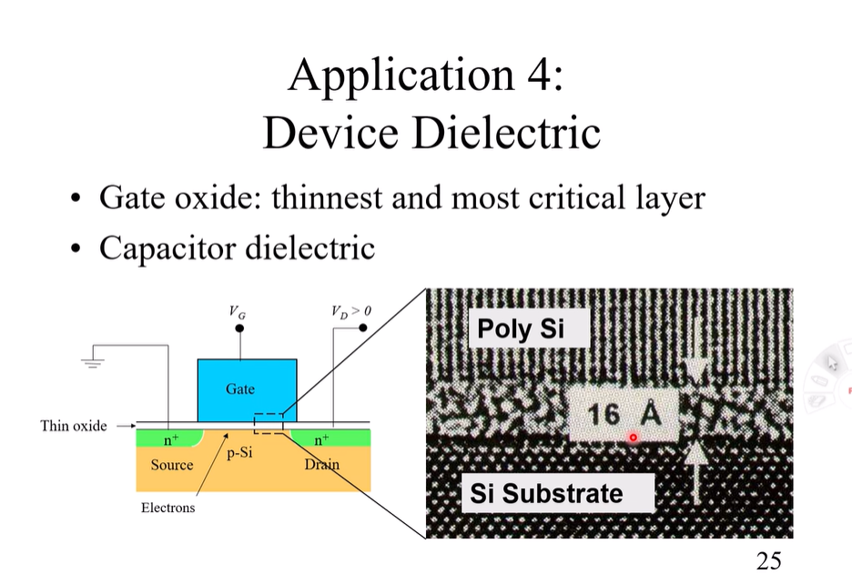
- 가장 중요한 Gate oxide이다.
- 실제로 16Å이면 1.6nm 만큼 되었을 정도로 매우 얇아졌다. 지금은 High-k 물질을 사용해서 HfO₂ 같은걸로 일부 대체 되긴했다.
- SiO₂의 원자층 한 층이 3Å 정도되는데 16Å 정도 되니까 절연체의 역할을 잘 못하더라. 실제로 이렇게 박막이 얇아지니까 전류가 질질 샜고 전력 소모량이 너무 커졌다. 이게 2010년도 살짝 전쯤 얘기이다.
- 2008년부터 Intel에서 만든 CPU에는 OXide 대신 HfO₂를 사용하기 시작했고 다시 16Å 보다 두꺼워졌고 전력 소모가 줄었다.
7. Pre-oxidation RCA Clean
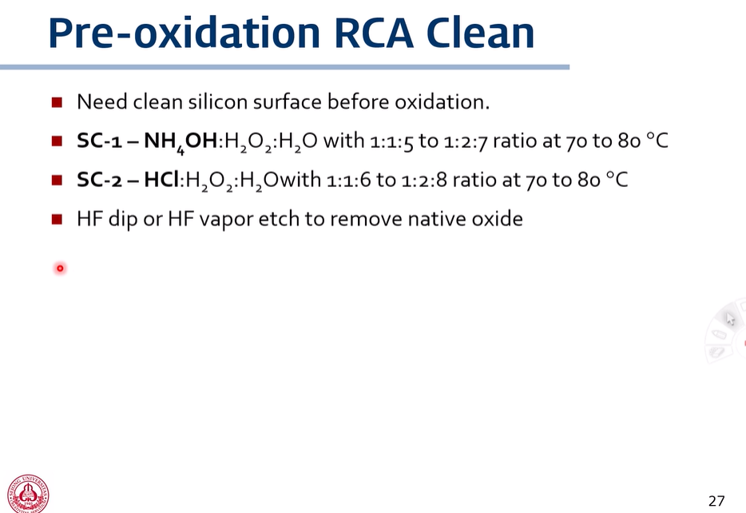
- Oxidation을 진행하기 전에 cleaning을 진행해야 한다. 그래서 SC-1을 하고, SC-2하고, HF dip까지 진행해준다. 암모니아 수용액 → 염산 → 불산
8. Oxidation Mechanism
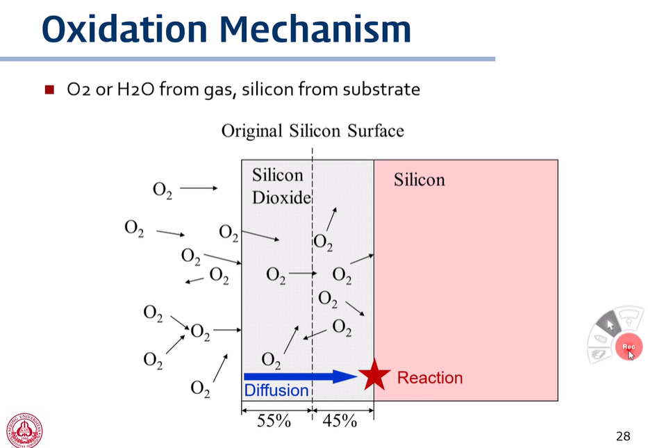
- Fe나 Cu는 O₂와 계속 반응하고 산화해서 산화막이 두꺼워진다.
- Al는 O₂가 계속 자라지 않고 얇게 생기고 끝난다.
→ 이 차이는 O₂가 다공성이 많은 곳에서는 계속 침투해서 자라게 되고, Al처럼 치밀하면 얇게 생기고 끝나는 것이다.
- 상온에서는 Si가 SiO₂로 성장할 때 굉장히 치밀하게 자란다. 그래서 얇게 생길 수 밖에 없다. 그래서 두껍게 성장시키려면 온도를 올려야한다.
- 산화가 일어날 때는 Si가 소모되면서 부풀게 된다. 당연히 O가 들어갔으니 SiO₂의 부피가 더 커지겠지. 원자도 많아지고 구조도 엉성해지니까 당연한 결과 (근데 이건 설명을 안들으면 생각을 못해본다 이거야)
9. Oxide Growth Rate
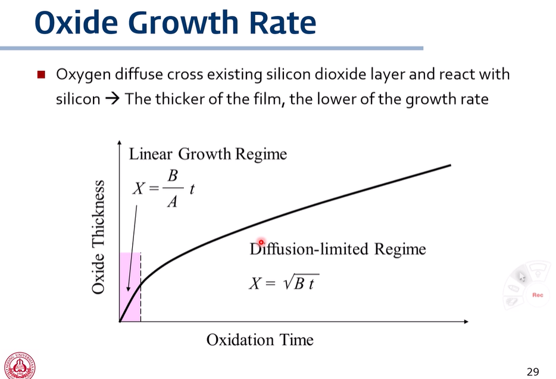
10. Process Parameters
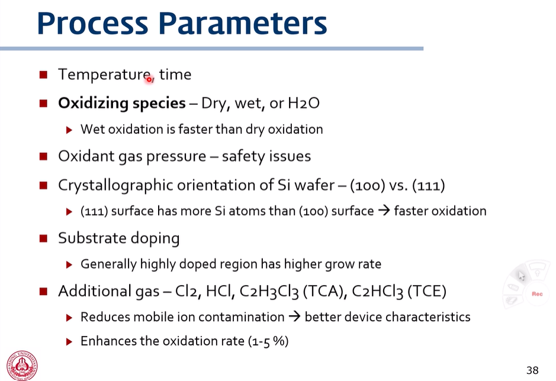
- 결국 저온에서 공정을 진행하는게 유리하다. 그렇게 하기 위해서는 압력을 높이게 된다면 온도를 낮출 수도 있다고 한다. 그렇지만 안전 이슈로 연구만 되었다고 한다.
- 결정면에 따라서도 성장 속도가 다른데 이건 초반에만 그렇다고 한다.
- (111)이 (100)보다 성장속도가 빠르긴 하지만 Si원자가 더 많기 때문에 결함이 더 많다. 어쨌거나 (111)을 쓰지는 않는다고 한다.
- 도핑을 한 Si는 B나 P를 도핑한 경우이다. 그러면 도핑한 쪽에서 Oxidation 속도가 조금 더 빠르다고 한다.
- Additional gas는 O₂ 넣어줄 때 같이 넣어주는 애들이다. 왜냐하면 Cl₂, HCl 이런 것 넣으면 금속 이온과 만나서 이온 착화합물을 만들면서 표면에 이온들이 줄어든다.
11. Oxidizing Species
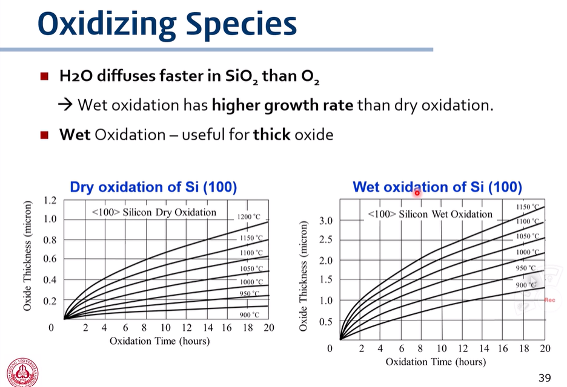
- 동일한 온도에서 비교해보면 Dry Oxidation과 Wet Oxidation의 속도차이가 확실하게 보인다. Wet oxidation에서는 더 낮은 온도에서도 성장시킬 수 있다. 그리고 빠르기도 하다.
- H₂O가 더 잘 녹을 수 있고, 잘 녹을 수 있으니까 농도 기울기가 커져서 더 많이 녹을 수 있게 된다.
12. Dry vs. Wet
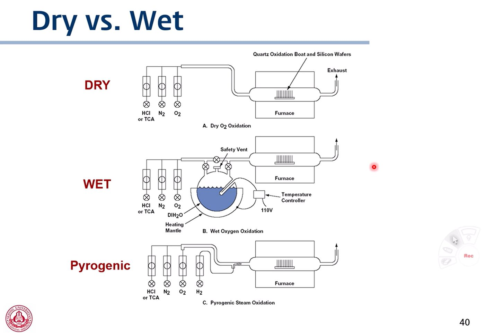
- Dry 에서는 1000도에서 진행한다고 한다면 1000도에 도달하기 전까지는 N₂ gas를 계속 blowing 해준다. 그리고 O₂를 넣고 산화를 시켜준다.
- 설정한 시간동안 O₂랑 반응시키고 (이미 알고 있음 얼마나 자라는지) 그리고 끝나면 N₂ gas를 blowing 해준다.
- Wet 에서는 O₂ 가 나갈 때 H₂O가 묻어서 나갈 수 있게 해준다. 그러면 H₂O가 100%가 아니더라도 속도는 빨라진다.
- Pyrogenic(불을 사용하는?)에서는 확실하게 100%로 만들기 위한 방법이다. H₂ : O₂를 2:1의 비율로 넣어준다.
- 결국 저온에서 공정을 진행하는게 유리하다. 그렇게 하기 위해서는 압력을 높이게 된다면 온도를 낮출 수도 있다고 한다.
- HCl, Cl₂ 이런것들을 같이 넣어주면 표면 특성이 더 좋아지고, 1~5% 정도 속도가 빨라진다고 한다.
13. The Deal-Grove Model
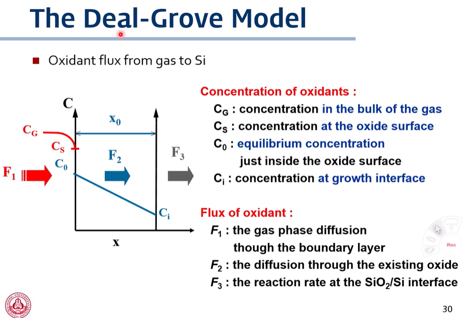
- 여기에서 X0 는 산화막의 두께를 의미한다.
- CG → Cs로 올 때 표면의 O₂ 농도가 살짝 낮아진다. 그건 약간 당연한 건데 오른쪽으로 계속 O₂가 이동해서 계면에서 반응하면서 소모 되잖아? 그러니까 농도가 낮아지겠지.
- CG는 Gas 상태에서의 농도, Cs는 SiO₂ 표면에서의 Gas 상태의 농도이다.
- C0과 Ci는 고체 안에 녹아 들어간 산소의 농도이다. (바로 앞 문장과 구분된다. Gas이냐 아니면 고체 안에 녹아 들어갔는지 여부의 차이가 있다.)
- CG→Cs는 기체 상태에서의 확산이, Co→Ci는 고체 상태에서의 확산이 일어난다. 그리고 Ci(interface)에서는 화학 반응이 일어난다. 화학반응은 Ci의 농도와 비례하게 일어날 것이다.
- 이제 F에 대해서 알아보자. F는 Flux이다. 단위 시간당 움직이는 입자의 양을 의미한다. F1는 Gas 상태에서의 Flux이다. F2는 고체 상태에서의 Flux이다. (Fick’s first law). F3는 화학반응에 의해 없어지는 Flux를 얘기한다.
- F1, F2, F3가 물론 처음에는 값이 다르더라도 정상 상태이고, 연쇄적으로 일어나기 때문에 결국 시간이 지나면 같아지게 된다. 결국 가장 느린애한테 맞춰질 것이다.
- 그래서 F1, F2, F3에 대한 식을 각각 만들고 같다고 두면 그게 정상 상태일 때 같다고 두고 푸는 것이다. (Steady state라고 해서 평형 상태라는 것은 아니다. → 뭔가 그런거 같긴해 확실하게는 몰라도)
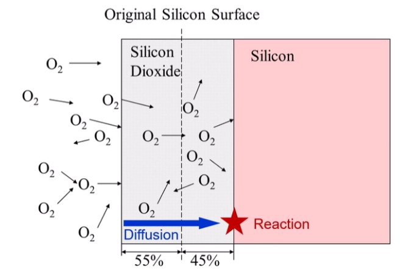
- 다시 이 그림에서 고체 SiO₂ 안에 들어갈 수 있는 O₂의 양은 용해도와 관련이 있고, 외부 기체 분압이 크면(Gas의 압력) 클수록 많이 들어갈 것이다.
- 당연하게도 Si + O₂ → SiO₂가 되어 O₂ 가 사용되니까 농도가 낮아지겠지? 그러면 농도 차이가 발생해서 확산이 일어날 것이다. (쉬운건데 왜 확산이 일어나?라고 하면 당황할 수 있다.)
Q. 헨리의 법칙이란?
A. 기체가 고체나 액체에 녹아 들어가는 양(평형 농도)이 그 기체의 분압에 비례한다는 법칙이다. 그래서 외부 기체의 압력이 클수록 SiO₂ 안에 더 많은 O₂가 녹아 들어간다. (C₀ = Kₕ·Pₛ, Kₕ: 헨리 상수)
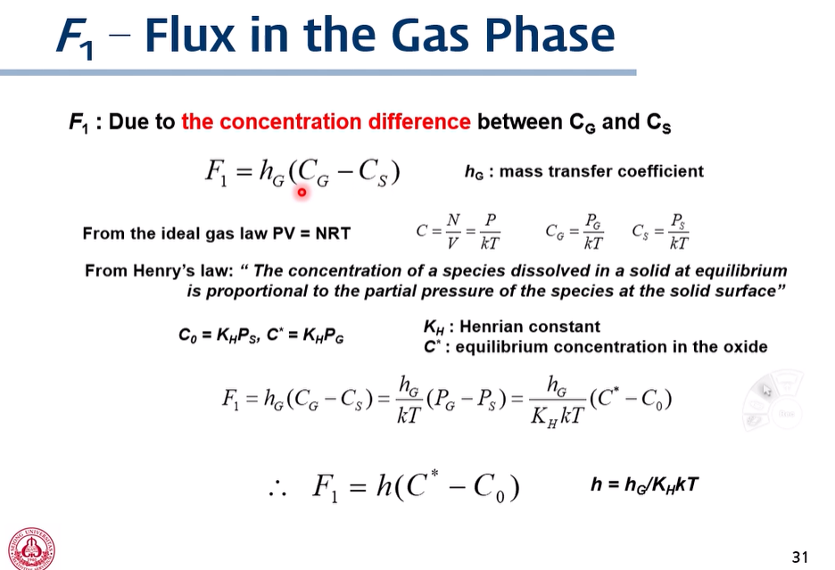
- F1 에서 CG와 Cs는 기상에서의 O₂의 농도차이다. hG는 확산 계수 같은 느낌.
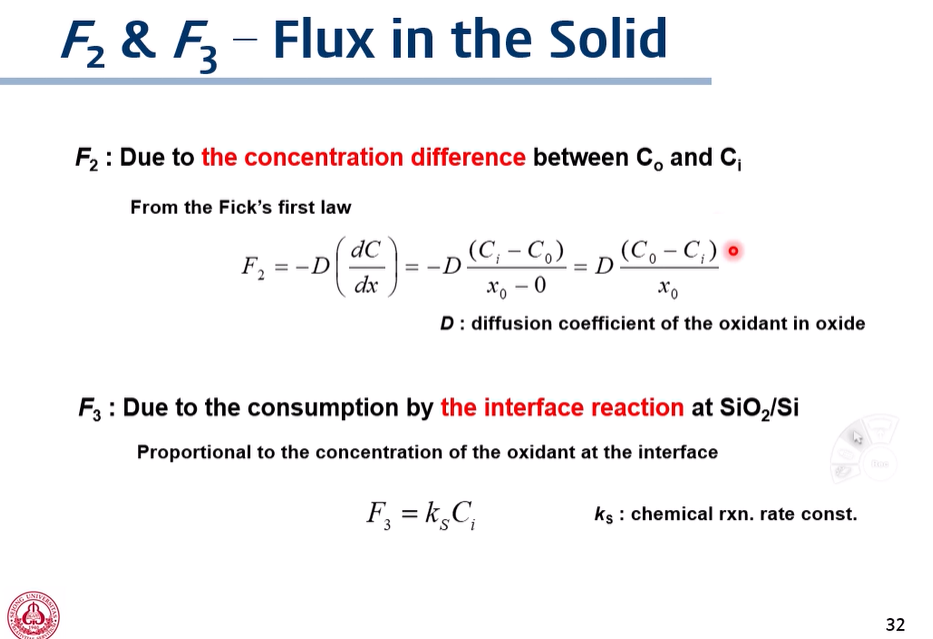
- F2는 고체 상태에서의 확산이니까 Fick’s first law로 계산하면 된다.
- F3는 확산해서 온 산소와 Si가 반응하는 것이다. Si의 농도는 일정하다고 보니까 결국 확산해서 온 산소의 농도에 의해 결정된다.
- 단 문제가 있는게 Gas에 관한 식과 Solid에 관한 식으로 구분되어 있다는 것이다. 그래서 Gas에 관한식으로 Solid에 관한식으로 바꾼다.
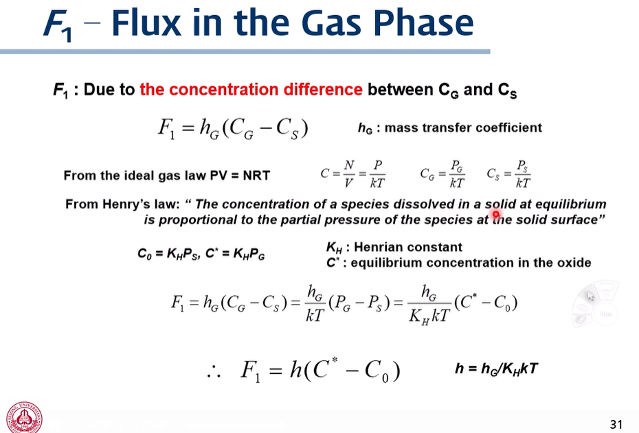
Oxidation2 ~15분까지 봤음